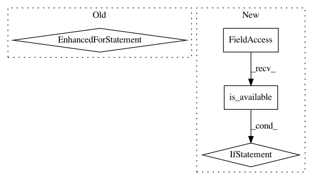

04ad358395c7bd074ffb9af235ccb76d2c0dc4cc,examples/pna.py,,,#,62
Before Change
return train_acc, val_acc, test_acc
for epoch in range(1, 301):
train_loss, val_loss = train()
print("Epoch: {:03d}, Loss: {:.8f}, Val Loss {:.8f}".format(epoch, train_loss, val_loss))
train_acc, val_acc, test_acc = test()
print("Accuracy: train: {:.4f} val: {:.4f} test: {:.4f}".format(train_acc, val_acc, test_acc))
After Change
return self.mlp(x)
device = torch.device("cuda" if torch.cuda.is_available() else "cpu")
model = Net().to(device)
optimizer = torch.optim.Adam(model.parameters(), lr=0.001)
scheduler = ReduceLROnPlateau(optimizer, mode="min", factor=0.5, patience=5,
In pattern: SUPERPATTERN
Frequency: 3
Non-data size: 4
Instances
Project Name: rusty1s/pytorch_geometric
Commit Name: 04ad358395c7bd074ffb9af235ccb76d2c0dc4cc
Time: 2020-07-01
Author: matthias.fey@tu-dortmund.de
File Name: examples/pna.py
Class Name:
Method Name:
Project Name: rusty1s/pytorch_geometric
Commit Name: e2db3b3f1d3d23cd5bc1e295835e0f4b33e95447
Time: 2018-03-07
Author: matthias.fey@tu-dortmund.de
File Name: examples/cora_gcn.py
Class Name:
Method Name:
Project Name: pytorch/tutorials
Commit Name: 0ad33d606682537466f3430fc6d6ac7d47460f1a
Time: 2018-04-24
Author: soumith@gmail.com
File Name: beginner_source/blitz/cifar10_tutorial.py
Class Name:
Method Name: